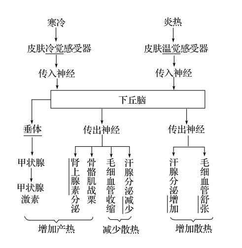

生物步步高23.人体的内环境稳态及实例
生物步步高23.人体的内环境稳态及实例
tags: Biology
内环境及其稳态
内环境的概念：由细胞外液构成的液体环境，本质上是一种盐溶液，类似于海水。这在一定程度上反映了生命起源于海洋。
细胞内液占体液的三分之二，细胞外液（内环境）占体液的三分之一。
体液包括什么？ 细胞外液：血浆、组织液、淋巴。 细胞内液。
细胞外液包括什么？ 血浆、组织液、淋巴。
淋巴细胞生活的内环境？ 血浆、淋巴。
吞噬细胞生活的内环境？ 血浆、淋巴。
毛细淋巴管壁细胞生活的内环境？ 组织液、淋巴。
毛细血管壁细胞生活的内环境？ 血浆、组织液。
口腔上皮细胞生活的内环境？ 组织液。
-
血浆的主要成分
-
蛋白质：
-
无机盐：约
-
血液运送的物质：少量
-
水：约
组织液、淋巴、血浆最主要的差别在于血浆中含有较多的蛋白质。
-
内环境的理化性质
-
渗透压：细胞外液渗透压的 以上是由 和 决定的。血浆渗透压的大小主要与无机盐、蛋白质的含量有关，溶质微粒数目越多，渗透压越大。
-
酸碱度：正常人的血浆接近中性，pH 为 血浆 pH 之所以能够保持稳定，与它含有 、 等离子有关。
-
温度：人体细胞外液的温度一般维持在 左右。
血红蛋白属于内环境成分吗？ 不属于。只存在于细胞内。
尿素属于内环境成分吗？ 属于。
属于内环境成分吗？ 属于。
水属于内环境成分吗？ 属于。
胰岛素属于内环境成分吗？ 属于。
呼吸酶属于内环境成分吗？ 不属于，只存在于细胞内。
胃蛋白酶属于内环境成分吗？ 不属于，在消化道内，直接与外界相通。
抗体属于内环境成分吗？ 属于。
血浆蛋白属于内环境成分吗？ 属于。
胰淀粉酶属于内环境成分吗？ 不属于，在消化道中，直接与外界相通。
内环境的作用是？ 细胞生存的直接环境。 细胞与外界环境进行物质交换的媒介。
稳态的意义？ 机体进行正常生命活动的必要条件。
内环境稳态的实质？ 内环境中各种化学成分和理化性质保持相对稳定的状态。
内环境的稳态需要各种器官、系统协调一致而运行，依靠神经——体液——免疫调节网络。
-
渗透压是维持组织细胞结构与功能的重要因素。
-
适宜的温度和 PH 是酶正常发挥催化作用的基本条件。
-
正常的血糖水平和氧气含量是供给机体所需能量的重要保障。
判断：人体内的细胞外液只包含组织液、血浆和淋巴。
错误。还有脑脊液等。
判断：内环境的稳态就是内环境的各种理化性质保持相对稳定的状态。
错误。内环境的稳态就是内环境的各种理化性质和成分保持相对稳定的状态。
大量出汗或严重腹泻后，如果只喝水，不补充盐，内环境的渗透压会变小，内环境中的水将较多地通过渗透作用进入细胞内，造成细胞吸水膨胀，进一步导致细胞代谢的功能紊乱。因此在大量出汗后，为维持内环境的相对稳定，可以在饮水的同时适当补充一些电解质(或无机盐)。
营养不良如何引起组织水肿？ 血浆蛋白减少，血浆渗透压下降，造成组织水肿。
肾小球肾炎如何引起组织水肿？ 滤过率下降，原本被留在血浆中的蛋白随尿液排出，导致血浆蛋白减少，血浆渗透压下降，造成组织水肿。
过敏反应如何引起组织水肿？ 组织蛋白增多，组织液渗透压升高，造成组织水肿。
淋巴循环受阻如何引起组织水肿？ 组织蛋白增多，组织液渗透压升高，造成组织水肿。
判断：局部组织细胞代谢过度旺盛，代谢产物增加会造成组织水肿。 正确。
血浆如何与组织液进行成分转化？ 血浆成分透过毛细血管壁渗入组织液。 组织液成分大部分渗回血浆。
组织液如何与淋巴进行成分转化？ 组织液成分小部分渗入毛细淋巴管。
淋巴如何与血浆进行成分转化？ 淋巴由左右锁骨下静脉汇入血浆。
判断：内环境是人体进行细胞代谢的主要场所。 错误。细胞质基质。
科学家用化学分析的方法测得人体血浆的化学组成中，血浆蛋白含量为 6.9%，无机盐含量不足 1%，但无机盐在维持血浆渗透压中占重要地位，原因是？ 血浆中虽然含有一定量的蛋白质，但蛋白质相对分子质量大，单位体积溶液中蛋白质微粒数目少，产生的渗透压小。
肺气肿患者由于呼吸不畅，血液中的 pH 将略有[1]降低。这是因为[1]氧气不足，进行无氧呼吸产生乳酸，同时 排出不畅。
人体内环境的各种理化性质及化学物质含量会发生变化的原因是？ 外界环境因素的不断变化和体内细胞代谢活动的进行。
目前普遍认为，神经—体液—免疫调节网络是机体维持稳态的主要调节机制。对于人体来说，体温稳定也是内环境稳态的一项重要内容，这对于细胞的生命活动来说同样是必不可少的，这是因为各种酶发挥催化作用需要适宜的温度。
判断：寒冷刺激引起骨骼肌发生不自主颤抖时，体温已低于正常水平。 错误，仍然保持正常范围。
体温调节和水盐调节
-
体温调节
-
热量来源：主要是细胞中有机物的氧化放能
-
热量平衡：
-
产热量=散热量
-
产热途径：以骨骼肌和肝脏产热为主
-
散热途径：
-
皮肤内毛细血管散热
-
汗液的蒸发
-
呼气、排尿、排便等
-
-
-
意义：体温恒定是人体生命活动正常进行的必要条件，主要通过对酶的活性的调节体现
-
相关结构：
-
温度感受器：温度感受器和冷觉感受器，分布于皮肤、粘膜和内脏等
-
调节中枢：位于下丘脑
-
感觉中枢：位于大脑皮层
-
-

体温调节方式为神经——体液调节。
寒冷条件下参与产热的激素有肾上腺素和甲状腺激素，前者的分泌是由下丘脑的传出神经调节的，后者的分泌是由下丘脑和垂体分级调节的，两种激素之间表现为协同作用。
某人在寒冷环境中，皮肤会发生的变化是？ 汗腺分泌减少、毛细血管收缩、立毛肌收缩等。
-
水盐调节
-
调节机制：神经——体液调节
-
相关结构
-
调节中枢在下丘脑
-
渴觉中枢在大脑皮层
-
感受器：渗透压感受器（在下丘脑）
-
效应器：下丘脑神经分泌细胞
-
-
参与激素：抗利尿激素
-
产生：下丘脑
-
释放：垂体后叶释放
-
作用部位：肾小管和集合管
-
功能：促进肾小管和集合管对水分的重吸收
-
-
如果某人一天要喝 10 多千克水，经检查发现他的垂体功能有问题。此人多饮的原因可能是垂体功能出现问题，则不能释放由下丘脑神经分泌细胞分泌的抗利尿激素，使肾小管和集合管重吸收水分减少，尿量增加，渗透压上升，通过神经调节将信息传到大脑皮层产生渴感，主动饮水，造成多饮。
判断：炎热环境中，机体可通过减少产热甚至不产热来降低机体的体温。 错误，不可能不产热。
判断：肾上腺髓质的分泌活动不受神经纤维的支配。 错误。
判断：剧烈运动过程中，汗液的大量分泌是为了保持体温和渗透压的相对稳定。 错误，是保持体温相对稳定。
人在寒冷环境中经常会打“寒战”，反射过程？ 皮肤的冷觉感受器 → 传入神经 → 下丘脑体温调节中枢 → 传出神经 → 骨骼肌收缩。
由于室内外温差很大，人体维持稳态的调节能力有限，同学们的身体会受到一定的影响。即使是在夏季，医生也建议，在剧烈运动导致大汗淋漓之后最好不要立即到温度很低的空调间“乘凉”，其主要依据是？ 低温环境的刺激，使机体产热作用增强、毛细血管收缩、出汗减少，最终导致机体内热量不能及时散出。
长跑运动员在比赛中尿液产生的很少，原因是运动员大量出汗，细胞外液的渗透压升高，通过下丘脑的调节，垂体释放的抗利尿激素增加，促进肾小管和集合管对水的重吸收，使尿量减少。
以小鼠为实验材料，验证下丘脑是水盐调节的中枢。写出实验思路？ 将小鼠分为实验组与对照组两组，实验组破坏下丘脑，对照组不作处理（手术但不破坏），两组供给相同的水量，测定各组小鼠的尿量。
判断：渗透压感受器和调节中枢均位于下丘脑。 正确。
渗透压感受器位于下丘脑。
判断：肾小管内液体渗透压升高，重吸收增强。 错误，重吸收减弱。 水从肾小管吸收到血管中，血液渗透压大于肾小管液渗透压，肾小管渗透压升高，渗透压差减小，则重吸收减弱。
判断：人从炎热环境进入寒冷环境中，散热减少。
错误。人从炎热环境进入寒冷环境后，散热先增加后减少。
与在 的环境中相比，人在 的环境中产热更多，散热更多。